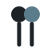

Two Pins StudioApps y juegos, hechos con cariño.
Two Pins Studio reúne los proyectos que quiero compartir con todos, gratis, sin anuncios ni rastreadores.
Apps


Sobre mí
Hola, soy Jeff, un desarrollador apasionado por las apps móviles. Creo apps y juegos en mi tiempo libre: cada proyecto nace de una idea sencilla, algo que quiero hacer realidad.
Todo lo que hago lo comparto gratis: sin anuncios, sin rastreo, sin compras dentro de la app.
También estoy abierto a propuestas, así que no dudes en contactarme.
Apoya mi trabajo
Si te gusta lo que hago y quieres ayudarme a seguir, un café ayuda mucho.
Invítame a un café